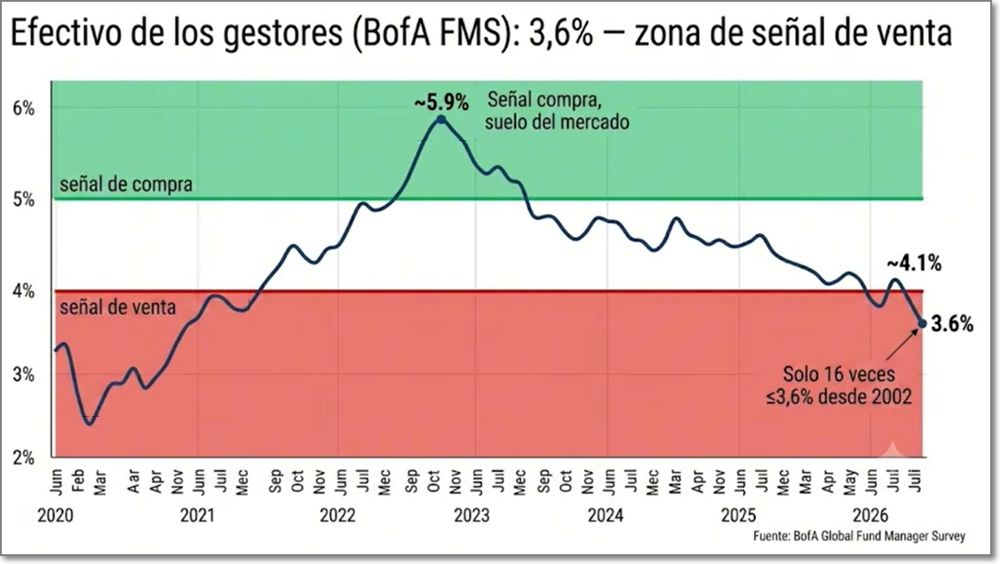

Umbrales: venta ≤ 4% · compra ≥ 5% · entre ambos: neutral
El BofA Global Fund Manager Survey (FMS) cash level es un dato clave dentro de la encuesta mensual que Bank of America realiza a gestores de fondos de todo el mundo.
Es el porcentaje promedio de los activos bajo gestión que los gestores de fondos encuestados mantienen en efectivo (liquidez) en sus carteras.
Se publica mensualmente (solo para clientes) y refleja, en tiempo real, cuánto dinero tienen los profesionales «guardado» sin invertir en activos de riesgo como acciones o bonos.
Debe interpretarse como un indicador contrario (contrarian).
La lógica es que cuando los gestores tienen muy poca caja (≤ 4%), están «casi completamente invertidos», el optimismo es extremo y tienen poca «munición» para seguir comprando.
Esto suele generar una señal de venta (la conocida «Cash Rule» de BofA).
Por el contrario, cuando el nivel de caja es alto (≥ 5%), refleja miedo y prudencia, lo que históricamente ha coincidido con puntos de posible rebote u oportunidad de compra.
En resumen: caja baja = complacencia y riesgo de corrección; caja alta = pesimismo y posible suelo de mercado.
